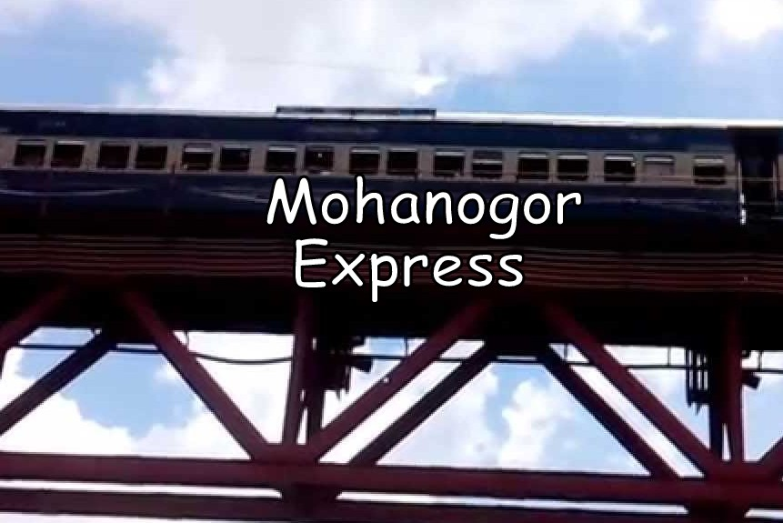
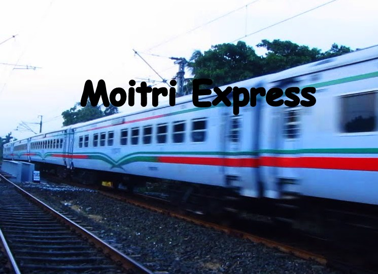

Our Train
মহানগর প্রভাতি
" মহানগর প্রভাতি " Travels from Dhaka to Chittagong,Rajshahi and travels Chittagong,Rajshahi to Dhaka.
মহানগর এক্সপ্রেস
" মহানগর এক্সপ্রেস " Travels only from Dhaka to Sylhet and Sylhet to Dhaka.
সুবর্ণ এক্সপ্রেস
" সুবর্ণ এক্সপ্রেস " Travels only from Khulna to Rajshahi and Rajshahi to Khulna.
সুন্দরবন এক্সপ্রেস
" সুন্দরবন এক্সপ্রেস " Travels From Khulna to Dhaka,Rajshahi and from Dhaka,Rajshahi to Khulna.
মৈত্রী এক্সপ্রেস
" মৈত্রী এক্সপ্রেস " Travels only from Dhaka to Calcutta and Calcutta to Dhaka.
আন্তনগর এক্সপ্রেস
" আন্তনগর এক্সপ্রেস " Travels from Chittagong to Rajshahi and Rajshahi to Chittagong.
পারাবাট এক্সপ্রেস
"পারাবাট এক্সপ্রেস " Travels from Sylhet to Dhaka and Dhaka to Sylhet.
Train Service
Enjoy Our Journey by Train
Railway Technical Web Pages, a site packed with articles about railways, covering technical, operational and financial issues. Although we update the site, regular readers will still see the basic structure underneath the new face and we have retained the original page names to help you find your way to pages you might want to reference..

-

- 
-

-

- 
-

-